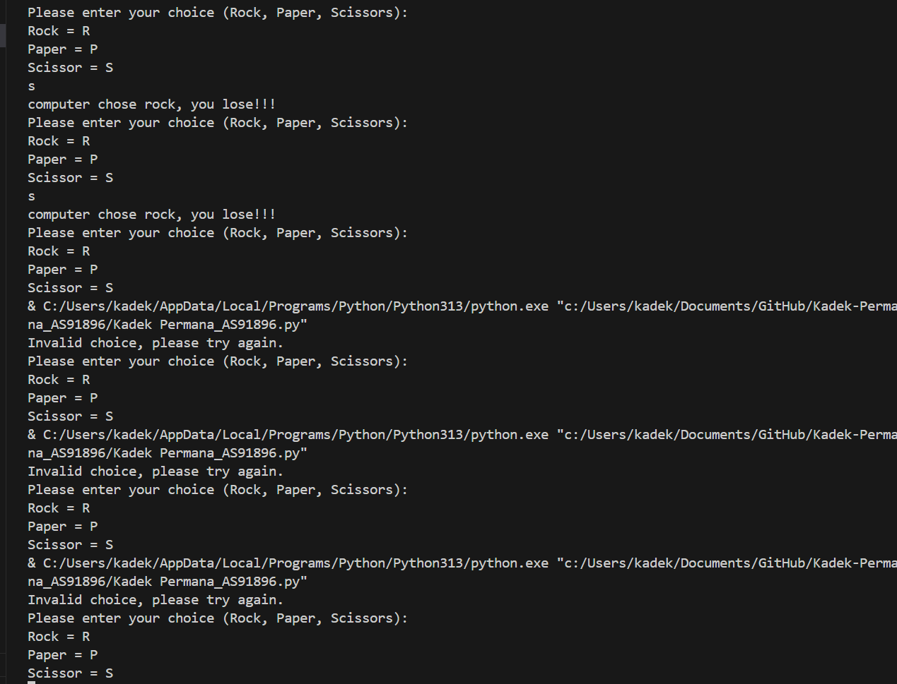
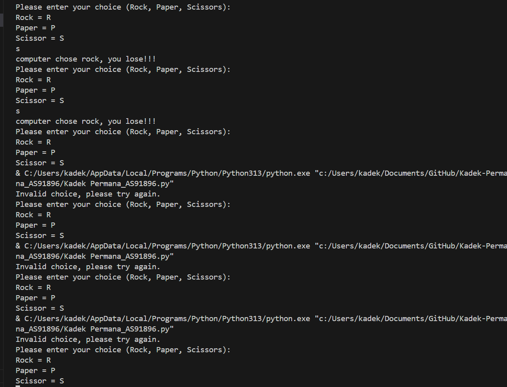

Project Overview
Low Poly Character

This project is the creation of an original 3D character model that I created myself using the Blender application. This character is designed to have unique characteristics in terms of physical design, expression, and personality. In the process, I started from the sketch concept, then continued to the modeling stage, detailed sculpting, texturing, to the simple rigging process so that this character is ready to be animated. The main focus of this project is to explore creativity in character creation, while honing 3D technique skills such as the use of good topology, UV unwrapping, and shading. This project is an important step in developing my own visual style and deepening my understanding of the 3D character creation pipeline as a whole.
Game rock, paper, scissors
 

This is a simple Rock, Paper, Scissors game written in Python. Players are asked to choose between rock, scissors, or paper, and are also only allowed to type the first letter. The game lasts for 5 rounds. In each round, the winner gets 2 points. If they tie, they get 1 point, and if they lose, they get no points. After the game is over, you will be asked if you want to play again. You must enter a letter between N and Y. If you enter N, you will receive a thank you and will not play again. If you enter Y, you will play again and repeat for 5 rounds.
something


......